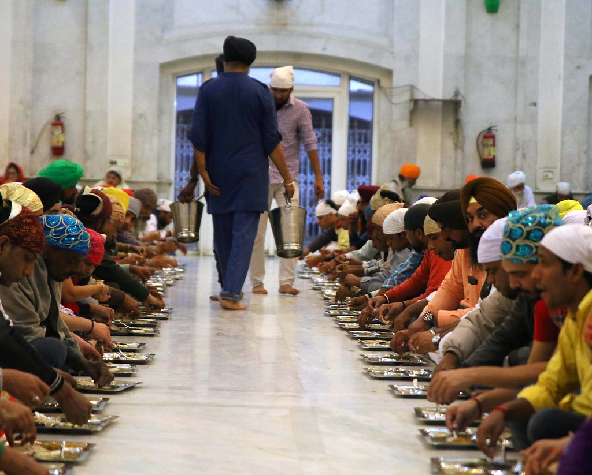

Traditions of Sikhism
Sikh Code of Conduct (Rehat Maryada)
Sikh follow a moral and ethical code, including:- The Five Ks: Articles of faith worn by initiated Sikhs (Amritdhari Sikhs)
- Kesh(uncut hair)
- Kangha(wooden comb)
- Kara(steel bracelet)
- Kachera(cotton undergarments)
- Kirpan(a ceremonial sword symbolizing justice)
- Abstining from alcohol, tobacoo, and other intoxicants
Key Celebrations
- Vaisakhi: Marks the founding of the Khalsa by Guru Gonbind Singh in 1699, celebrated with prayers, processions, and community feasts.
- Gurpurabs: Commemorate the birthdays or martyrdoms of the Gurus, featuring prayers, kirtan, and community service.
- Diwali/Bandi Chhor Divas: Celeberates Guru Hargobind's release from imprisonment and emphasizes the triumph of light over darkness.
Langar-The Community Kitchen
 Langar, the community kitchen, is a cornerstone of Sikhism that embodies the principles of equality, humility, and selfless service (Seva). Established by Guru Nanak, the founder of Sikhism, Langar serves as a powerful expression of the faith's values and continues to play a vital role in Sikh communities worldwide.The Essence of Langar
- Equality: Everyone is welcome to partake in Langar, regardless of caste, creed, religion, gender, or socio-economic status. In the Langar hall, all sit together on the floor as equals, emphasizing the Sikh belief in universal brotherhood.
- Selfless Service: Langar is prepared and served by volunteers, known as sevadars. This voluntary service fosters a sense of community and humility.
- Free of Charge: The meals provided in Langar are completely free, supported by donations from the community.
Historical Significance
Guru Nanak initiated the concept of Langar to challenge the deeply entrenched caste system of his time. By ensuring that people of all backgrounds shared a meal together, he sought to break down social barriers and promote unity.Guru Amar Das, the third Guru of Sikhism, institutionalized Langar further, mandating that anyone wishing to meet him must first partake in the communal meal, reinforcing the value of equality.
How Langar Works
- Preparation: Meals are cooked in Gurdwaras (Sikh places of worship) by volunteers using simple, nutritious ingredients like lentils, rice, bread (roti), and vegetables.
- Serving: The food is served in the Langar hall, where people sit in rows on the floor to symbolize equality.
- Clean-Up: Volunteers also manage cleaning, from washing dishes to tidying up the Langar hall.